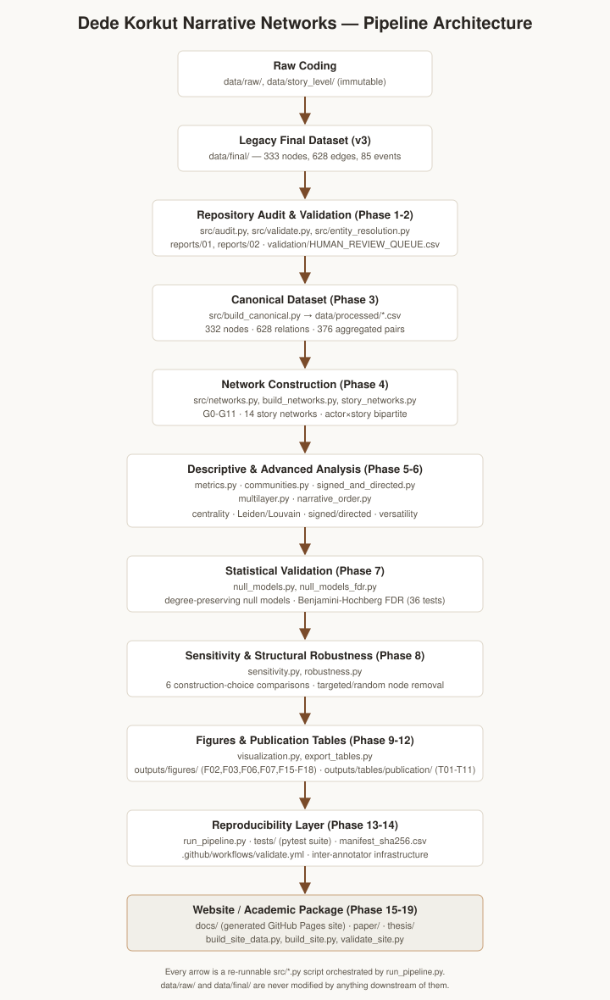

Methodology
Every step below is implemented as a standalone, re-runnable script under
src/, orchestrated by run_pipeline.py.
Pipeline overview
Raw coding (data/raw/, data/story_level/)
↓ (legacy v1-v3 standardization, outside this rebuild's scope)
Legacy final dataset (data/final/, v3)
↓ src/audit.py — repository audit, README claim verification
↓ src/validate.py, src/entity_resolution.py — data quality framework
Canonical dataset (data/processed/) — src/build_canonical.py
↓ src/build_networks.py, src/story_networks.py — G0-G11 network models
↓ src/metrics.py — descriptive corpus/centrality metrics
↓ src/communities.py, src/signed_and_directed.py, src/multilayer.py, src/narrative_order.py
↓ src/null_models.py, src/null_models_fdr.py — statistical validation
↓ src/sensitivity.py, src/robustness.py — sensitivity & structural robustness
↓ src/visualization.py, src/export_tables.py — figures & publication tables
Website (docs/) — src/build_site_data.py, src/build_site.py

Key modeling decisions
Every non-obvious methodological choice is logged with its rationale in decision_log.md. Highlights:
Aggregation rule (DEC-003): event-level relations are aggregated into
relations_aggregated.csv by unordered actor pair — directionality is
preserved as flags, not lost.
Relation taxonomy (DEC-004): the 17 observed relation types are mapped to SOCIAL / KINSHIP / AUTHORITY / SEMANTIC / OTHER / UNCERTAIN families — an interpretive scheme, not a raw-data fact.
Directed network construction (DEC-005): the directed variant (G9) uses only relations explicitly coded as directional — undirected relations are excluded, never assigned an arbitrary direction.
Community substrate (DEC-007): community detection runs on the core-social network (identity/title relations excluded), and the 23-connected-component caveat (see Communities) is carried through every downstream use.
Null model method (DEC-008): degree-preserving randomization
(networkx.double_edge_swap), Benjamini-Hochberg FDR correction across all 36 tests.
Network model definitions
All 12 network variants (G0-G11) are defined in one place, src/networks.py, and
documented in full in network_models.md. Every variant is reproducible by
re-running python run_pipeline.py --stage build_networks.
Further reading
Data Dictionary · Relation Codebook · Limitations (17 items) · Inter-Annotator Protocol
What this project does not claim
- Network centrality is not equated with literary importance anywhere in this project.
- Degree assortativity ("disassortative network") was an early descriptive observation that did not survive null-model statistical validation — see Analysis.
- Community labels are numeric IDs, never invented cultural or sociological names.
- Narrative order (
satir_no) is never treated as historical chronology.